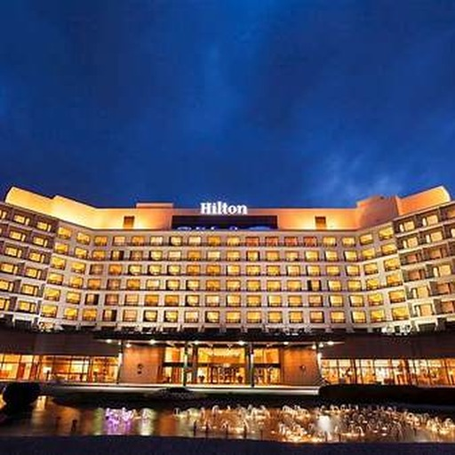

Hilton Gyeongju
484-7, Bomun-ro, Gyeongju, 38117, Republic of Korea
The conference will be held at Hilton Gyeongju in the Bomun Lake resort area.
From Incheon International Airport
1
Take the AREX airport railroad to Seoul Station.
2
Take a KTX train from Seoul Station to Gyeongju Station.
3
Continue from Gyeongju Station to Hilton Gyeongju by taxi.
A direct intercity bus from Incheon Airport to Gyeongju may also be available. Airport-bus schedules can change, so check the official airport bus search close to your travel date.
From Gimhae International Airport
1
Take the airport limousine / intercity bus from Gimhae International Airport to Gyeongju.
2
From Gyeongju Intercity Bus Terminal, continue to Hilton Gyeongju by taxi or local transportation.
Gimhae Airport lists airport-limousine service for the Gyeongju/Pohang route. Please confirm the timetable before departure.